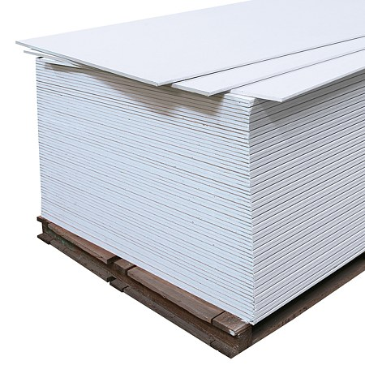
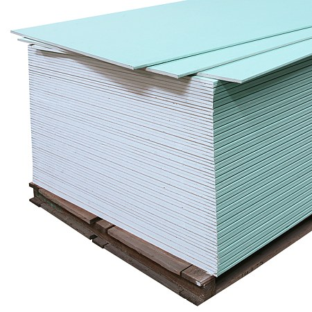
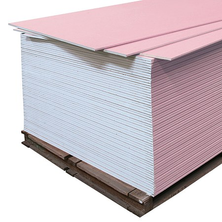

De ce gips-carton?
Sistemele de gips-carton sunt solutia moderna pentru pereti despartitori, tavane false, ghenuri si finisaje interioare. Se monteaza rapid, se lucreaza usor si permit integrarea oricarei instalatii — electrice, termice sau sanitare — inainte de inchidere.
Fata de zidaria clasica, un perete din gips-carton se ridica in ore, nu in zile, nu necesita tencuiala groasa si nu adauga greutate mare pe structura. Scrie-ne pe WhatsApp si iti recomandam tipul de sistem potrivit pentru proiectul tau.
Placi Gips-Carton
Dimensiune standard: 1200 × 2600 mm (sau 2000/3000 mm). Grosimi: 9.5 mm, 12.5 mm, 15 mm.

Placa Gips-Carton Standard (RB / Tip A)
- Cel mai bun raport pret/calitate — utilizata la 90% din lucrari
- Usor de taiat, gaurit si spacklit — lucru rapid
- Suprafata perfecta pentru vopsea, tapet sau placare faianta (cu grunduire)
- Permite integrarea oricarei instalatii in perete
- Greutate mica — nu solicita structura

Placa Gips-Carton Hidrofuga (RBI / Tip H2)
- Absorbtie de apa redusa cu 90% fata de placa standard
- Rezistenta la vapori de apa si umezeala ridicata
- Baza ideala pentru placare cu faianta in bai si bucatarii
- Nu se umfla, nu se deformeaza in medii umede
- Se finiseaza la fel ca placa standard

Placa Gips-Carton Rezistenta la Foc (RF / Tip F)
- Rezistenta la foc 60–90 minute (EI60/EI90) in sistem complet
- Fibrele de sticla mentin structura integra in caz de incendiu
- Obligatorie la ghenele tehnice, camere tehnice, casa scarii
- Nu arde, nu propaga flacara, reduce emisia de fum
- Dubla grosime 2×12.5mm poate atinge EI120

Placa Gips-Carton 9.5 mm (pentru tavane)
- Greutate redusa — mai putin stres pe sistemul de suspensie
- Distanta intre profile mai mica (400 mm) pentru rigiditate
- Ideal pentru tavane false simple cu profil CD
- Finisaj identic cu placa 12.5mm — glet, vopsea, tapet
Profile Metalice
Profile din tabla zincata 0.6 mm pentru structura peretilor si tavanelor false. Lungime standard: 3 m si 4 m.
Profile pentru pereti (sistem CW/UW)
Profil UW (U-Wall) — talpica perimetru
Profil tip „U" montat orizontal pe podea si tavan, la periferia peretelui. Ghideaza si ancoreaza montantii CW. Latime: 50, 75, 100 mm. Lungime 3 m.
Cere ofertaProfil CW (C-Wall) — montant vertical
Profil tip „C" folosit ca montant vertical in peretele de gips-carton. Se introduce in UW. Latime: 50, 75, 100 mm. Pas de montaj 400 sau 600 mm.
Cere ofertaProfil UA (montant ranforsat)
Versiunea mai rigida a profilului CW, cu tabla mai groasa (1–2 mm). Folosit la pereti care suporta greutati suplimentare (dulapuri, obiecte sanitare suspendate).
Cere ofertaProfil Colt Exterior (PA) / Profil Stop (FU)
Profil PA pentru protejarea colturilor exterioare ale peretilor. Profil FU (stop) pentru terminarea marginii peretelui fara alt element de constructie.
Cere ofertaProfile pentru tavane false (sistem CD/UD)
Profil UD (U-Direct) — talpica perimetru tavan
Profil tip „U" mic (28 mm) montat pe pereti la nivelul tavanului fals, ca element perimetral in care intra profilele CD. Lungime 3 m.
Cere ofertaProfil CD (C-Direct) — rigle principale tavan
Profil tip „C" (60 mm) care formeaza structura tavanului fals. Se fixeaza cu bride directe sau tije filetate de planseu. Pas 400–600 mm.
Cere ofertaBrida Directa (omega)
Conector intre profilul CD si planseu. Se fixeaza in beton cu diblu si surub, retine profilul CD la nivelul dorit. Cea mai rapida metoda de suspensie.
Cere ofertaNonius / Tija Filetata M6 + Brida Nonius
Sistem de suspensie reglabil in inaltime pentru tavanele false cu spatiu mare sau cu nivel variabil. Tija filetata M6 + doua bride nonius care se agata.
Cere ofertaSisteme Pereti Despartitori
Configuratii standard pentru peretii din gips-carton — de la simplu la dublu strat si cu izolatie fonica.
Perete simplu (W111) — 1 strat pe fiecare parte
Structura: UW + montanti CW la 600mm + 1 placa 12.5mm per parte. Grosime totala 75–125mm. Cel mai rapid si mai economic. Potrivit pentru birouri, spatii uscate.
Cere ofertaPerete dublu strat (W112) — 2 straturi pe parte
Doua placi 12.5mm pe fiecare parte a structurii. Rezistenta la impact mult mai buna, izolatie fonica imbunatatita, rezistenta la foc EI90 cu placi RF.
Cere ofertaPerete cu izolatie fonica (W115)
Structura CW cu vata minerala 50–75mm in interior. Reduce zgomotul cu 45–55 dB. Recomandat intre dormitoare, intre apartamente sau la birou conferinte.
Cere ofertaGhena tehnica / Coloana instalatii
Sistem pentru mascarea tevilor, coloanelor de canalizare sau instalatiei de incalzire. Structura CW dreapta sau curbata, placi RF la conducte de gaz.
Cere ofertaTavane False
Solutii pentru mascarea instalatiilor, imbunatatirea fonoizolatiei si crearea unui finisaj modern la plafon.
Tavan direct (D111) — bride directe
Profilele CD suspendate cu bride directe (omega) de planseu. Coborare mica (max. 5–8 cm). Rapid, economic, potrivit cand nu e nevoie de spatiu mare in tavan.
Cere ofertaTavan suspendat (D112) — tije filetate + nonius
Sistem cu tije filetate si bride nonius, permite coborari mai mari (10–50 cm). Ideal cand e nevoie sa ascunzi tevi, cabluri, sau sa creezi tavan cu niveluri diferite.
Cere ofertaTavan cu izolatie fonica (D113)
Placi gips-carton + vata minerala intre structura si planseu. Reduce transmisia zgomotelor de impact (pasi) si aeriene de la etajul de deasupra.
Cere ofertaTavan curb / Caseton decorativ
Placi subtiri de 9.5mm umezite si curbate sau taiate in fasii pentru casetoane, nervuri si elemente decorative. Necesita structura suplimentara cu profile taiate.
Cere ofertaAccesorii, Fixare & Finisaj
Suruburi, dibluri, banda armare, glet si toate consumabilele necesare pentru o lucrare de calitate.
Suruburi si fixare
Surub Autofiletant Metal 3.5×25 mm (TN)
Surub negru fosfatat tip TN pentru fixarea placilor de gips-carton in profilele metalice. Capul trece discret sub suprafata. Cutie 1000 buc.
Cere ofertaSurub Autoforant Tabla 3.5×9.5 mm (LB)
Surub mic tip LB (burghiu) pentru imbinarea profilelelor metalice intre ele (UW + CW). Se monteaza fara pregiurire. Cutie 1000 buc.
Cere ofertaDiblu Rapid Beton / Zidarie (6×40 mm)
Diblu plastic cu surub pentru fixarea profilelelor UW si UD de podea, tavan si pereti din beton sau caramida. Cutie 100 buc.
Cere ofertaDiblu Mola pentru Gips-Carton (Molly)
Diblu special cu lamele extensibile pentru fixare IN placa de gips-carton fara acces pe verso. Suporta sarcini de 15–35 kg. Ideal pentru rafturi, oglinzi.
Cere ofertaRosturi, banda armare si finisaj
Banda Hartie Armare Rosturi
Banda din hartie sau fibra de sticla pentru armarea rosturilor dintre placi. Previne aparitia fisurilor la imbinare. Rola 50–75 m.
Cere ofertaChit Rosturi / Glet Gips (Knauf Uniflott)
Chit special pentru umplerea rosturilor si acoperirea suruburilor. Se usuca rapid, fisurare minima. Sac 5 kg sau 25 kg.
Cere ofertaGlet Finisaj (strat fin)
Glet alb pentru strat de finisaj pe toata suprafata placii, dupa aplicarea chit-ului pe rosturi. Grosime 1–3 mm. Suprafata neteda pentru vopsea.
Cere ofertaGrund Penetrant (Tiefengrund)
Grund de penetrare aplicat pe placa inainte de glet sau faianta. Consolideaza suprafata, reduce absorbtia neuniforma si imbunatateste aderenta.
Cere ofertaBanda Acustica / Banda Perimetrala
Banda autoadeziva din spuma PE montata sub profilele UW/UD la contact cu planseu si pereti. Reduce transmisia vibratiilor si imbunatateste izolarea fonica.
Cere oferta